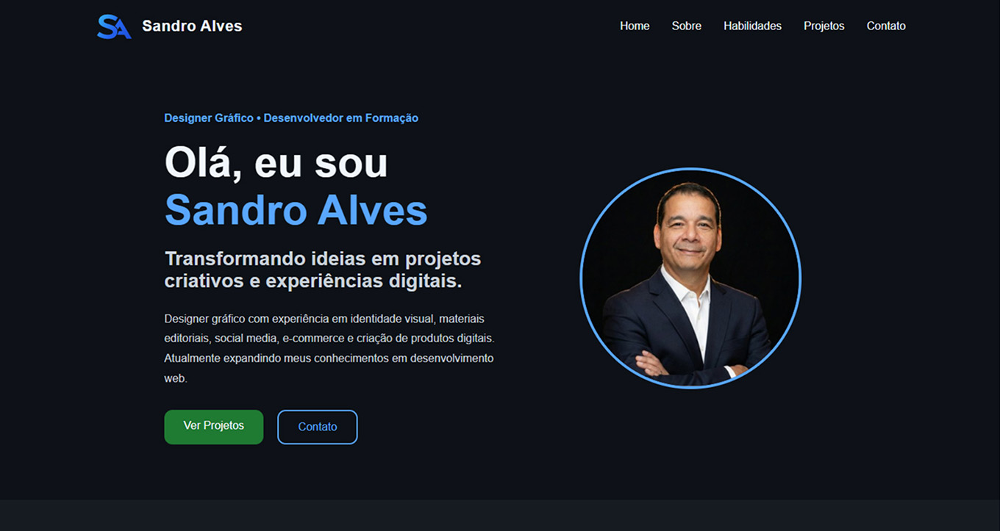
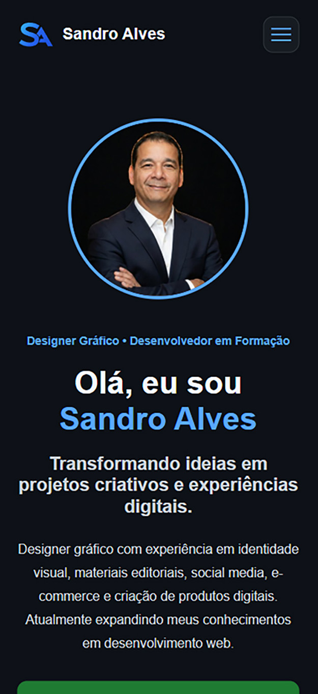
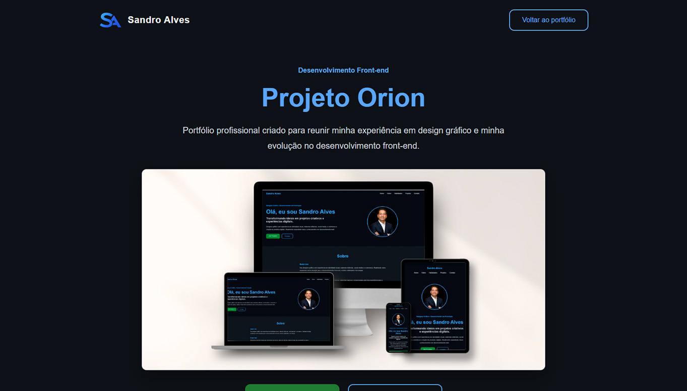

Project Orion
Professional portfolio created to bring together my graphic design experience and my growth in front-end development.

Overview
Project Orion was created as a professional portfolio to showcase projects in design, visual communication and web development through a clear, accessible and responsive interface.
The Challenge
The main challenge was to bring different areas of expertise together on a single page while maintaining clear communication, a strong visual hierarchy and a consistent experience across different screen sizes.
Solutions
- Semantic HTML structure.
- Responsive layout with Flexbox and CSS Grid.
- Accessible mobile navigation built with JavaScript.
- Automatically updated year in the footer.
- Card-based organization for skills and projects.
- Image framing and presentation adjustments.
- Keyboard navigation with visible focus states.
- Support for reduced-motion preferences.
Technologies & Skills
Across Different Screen Sizes
The interface was designed to maintain clarity, organization and visual consistency across desktop, tablet and mobile devices.



Key Learnings
During development, I practiced semantic structure, responsive design, DOM manipulation, accessibility, version control, conflict resolution and static site deployment.